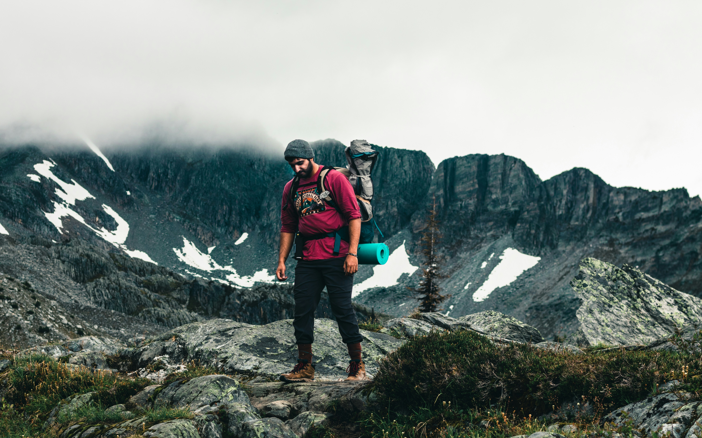

Feeling down on yourself? This guy has all the gear you can image and still got himself lost.She brought her pet to brighten up her hike, but another dog with a dark secret ruined their day.

This man spent thousands to do the Lord of The Rings Trail, only to discover he's in the midwest.These ladies are stuck in a ravine, and the water is rising!